IT-support-homelab
I denne Windows-labben med Active Directory (AD) setter vi opp brukere, grupper og delte mapper, og løser vanlige supportsaker. Målet er å lære mer om profesjonelle IT-miljøer gjennom praktisk arbeid i et simulert miljø.
Den detaljerte fremgangsmåten er dokumentert med skjermbilder i bilderegisteret. Se der hvis du lurer på et konkret steg eller en innstilling.
Følg guiden
- Labmiljø og nettverk
- Active Directory
- Windows-klienten
- Brukere, grupper og organisatoriske enheter
- Delte mapper og rettigheter
- Test av tilgang
- Vanlige supportsaker
Dette bruker vi
| Del | Oppsett i labben |
|---|---|
| Vertsmaskin | Windows 11 med VirtualBox 7.2.8 |
| Server | DC01 — Windows Server 2022 Standard Evaluation, Desktop Experience |
| Klient | CLT-001 — Windows 11 Pro |
Serveren fungerer både som domenekontroller, navnetjener og filserver. Navnetjenesten Domain Name System (DNS) hjelper klienten med å finne domenet og serverens tjenester. Det holder labben enkel. I et produksjonsmiljø ville man normalt brukt en dedikert filserver.
Alle personnavn i labben er fiktive.
Les guiden lokalt
Last ned via Code → Download ZIP, pakk ut hele ZIP-filen og åpne index.html i nettleseren. Behold images-mappen sammen med filen, slik at bildene vises.
1. Labmiljø og nettverk
En virtuell maskin (VM) er en datamaskin som kjører inne på den vanlige PC-en din. Vi bruker VirtualBox til å lage en server og en klient med hvert sitt operativsystem.

Begge de virtuelle maskinene kjører på den samme fysiske PC-en, men har hvert sitt operativsystem.
Installer VirtualBox og serveren
Last ned VirtualBox for Windows fra den offisielle siden. Labben bruker versjon 7.2.8. Vi installerer også Extension Pack, et separat tillegg til VirtualBox.
- Velg New, gi serverens VM navnet
DC01, og velg installasjonsfilen for Windows Server (ISO-filen). - Bruk manuell installasjon. Labben tildeler serveren 16 GB arbeidsminne, 4 virtuelle prosessorer og 50 GB disk. Dette er valgene som ble brukt, ikke minstekrav.
- Start VM-en og velg Windows Server 2022 Standard Evaluation (Desktop Experience). Desktop Experience gir det grafiske grensesnittet vi bruker i guiden.
- Velg Custom, og installer på den tomme virtuelle disken.
- Sett et administratorpassord og logg inn.
- Åpne Server Manager → Local Server → Computer name → Change. Sett Windows-maskinnavnet til
DC01og start på nytt.

Velg Windows Server med Desktop Experience.
Sett opp nettverket
Slå av serveren på vanlig måte før du endrer nettverkskortene i VirtualBox. Åpne Settings → Network.
Network Address Translation (NAT) gir serveren internettilgang gjennom vertsmaskinen. Host-only lager et eget labnettverk.
| Nettverkskort på serveren | Innstilling | Formål |
|---|---|---|
| Adapter 1 | Host-only Adapter | Forbindelse mellom vertsmaskinen, serveren og klienten |
| Adapter 2 | NAT | Utgående internettilgang for serveren |
Klienten får ikke automatisk internett bare fordi serveren har et NAT-kort.

Serverens første nettverkskort bruker Host-only. Klienten skal senere bruke samme nettverk.
Gi serveren en fast IP-adresse
Serveren skal ha en fast IP-adresse, slik at klienten alltid finner den på samme sted.
Dynamic Host Configuration Protocol (DHCP) deler automatisk ut IP-adresser. Åpne File → Tools → Network i VirtualBox, velg labbens Host-only-nettverk og åpne fanen DHCP Server.

Lower Address Bound er den første adressen DHCP kan dele ut, og Upper Address Bound er den siste. I labben er området 192.168.56.101–192.168.56.254. Server Address (192.168.56.100) er adressen til VirtualBox sin DHCP-tjeneste, ikke Windows-serveren DC01.
Vi velger 192.168.56.55 til DC01. Den ligger utenfor DHCP-området; kontroller også at ingen annen maskin bruker den.
Inne i Windows Server åpner du View network connections. I denne labben heter nettverkskortet vi skal endre Ethernet. Det er kortet vi koblet til Host-only Adapter i VirtualBox tidligere.
- Høyreklikk på Ethernet, og velg Properties.
- Marker Internet Protocol Version 4 i listen.
- Klikk på Properties for å åpne innstillingene for IP-adresse og DNS.
Fyll deretter inn verdiene i tabellen nedenfor. Det andre kortet, Ethernet 2, brukes til NAT i dette oppsettet og skal ikke endres her.
| Felt | Verdi |
|---|---|
| IP address | 192.168.56.55 |
| Subnet mask | 255.255.255.0 |
| Default gateway | Tom på dette kortet |
| Preferred DNS server | 192.168.56.55 |
Subnettmasken angir hvilket lokalt nettverk maskinen tilhører. DNS settes til serverens egen adresse fordi vi installerer DNS sammen med Active Directory i neste kapittel.

Fast IP-adresse og DNS på serverens labkort.
Adresseoversikt for labben

| Del | IP-adresse |
|---|---|
| DC01 og klientens DNS-server | 192.168.56.55 |
| VirtualBox DHCP | 192.168.56.100 |
| DHCP-området | 192.168.56.101–192.168.56.254 |
| CLT-001 | Tildeles automatisk fra DHCP-området |
Klienten får IP-adressen fra DHCP og bruker DNS på DC01 for å finne domenet.
Valgfritt: større skjerm
Velg Devices → Insert Guest Additions CD image i VM-vinduet. Åpne CD-stasjonen inne i Windows, kjør installasjonsprogrammet og start VM-en på nytt. Juster deretter oppløsning og skalering under Display settings.
Guest Additions installeres i Windows på den virtuelle maskinen. Det gjør blant annet at skjermoppløsningen kan tilpasses når du endrer størrelsen på vinduet i VirtualBox.
2. Active Directory
Et domene samler brukere og datamaskiner under felles administrasjon og regler for innlogging og tilgang. I labben heter domenet LAB.local.
Active Directory Domain Services (AD DS) lagrer informasjon om domenets brukere, grupper og datamaskiner. Det gjør at vi kan administrere kontoer sentralt i stedet for å opprette dem på hver enkelt PC.
DC01 er domenekontrolleren: serveren som kjører AD DS og håndterer innlogging i domenet. Ved innlogging kontrollerer den at passordet er riktig og at kontoen er aktiv og ikke låst.
Slik henger labben sammen
En organisatorisk enhet (Organizational Unit, OU) er en administrativ mappe i AD. Vi bruker Accounts til brukerkontoer og Groups til sikkerhetsgrupper.

Skogen er den ytterste rammen. Den kan inneholde flere domener, men i labben har vi bare ett. Skogen får navn etter det første domenet, så begge heter LAB.local.
DC01 er maskinen som kjører AD DS, mens LAB.local er domenet den betjener. Klienten CLT-001 kobles til dette domenet. Inne i AD bruker vi OU-ene Accounts og Groups til å organisere brukerkontoer og sikkerhetsgrupper; disse oppretter vi i kapittel 4.
Installer AD DS
- Åpne Server Manager → Add roles and features.
- Velg Role-based or feature-based installation og DC01 som målserver.
- Merk Active Directory Domain Services og godta Add Features.
- Fortsett gjennom veiviseren og velg Install.
Rollen er nå installert. Neste steg er å gjøre serveren til domenekontroller.

AD DS-rollen er valgt med de nødvendige administrasjonsverktøyene.
Opprett domenet
- Åpne varselflagget i Server Manager og velg Promote this server to a domain controller.
- Velg Add a new forest og skriv
LAB.local. En skog er den overordnede AD-strukturen; her oppretter vi en skog med ett domene. - Behold DNS server og Global Catalog valgt, slik bildene viser.
- Sett et passord for Directory Services Restore Mode (DSRM), gjenopprettingsmodusen for AD.
- Kontroller at domenets kortnavn blir
LABi feltet NetBIOS domain name, og fortsett med katalogplasseringene som vises i veiviseren. - Les oppsummeringen og eventuelle advarsler i forutsetningskontrollen. Velg deretter Install.
- Serveren starter på nytt når oppsettet er ferdig.

LAB.local opprettes som labbens første domene.
Hvorfor trenger vi DNS?
Klienten spør DNS-serveren på 192.168.56.55 hvor domenekontrolleren for LAB.local finnes. DNS peker til DC01 på samme IP-adresse, slik at klienten kan kontakte serveren og kobles til domenet.
3. Windows-klienten
Klienten er PC-en labbrukerne skal logge på. Vi bruker Windows 11 Pro, som støtter tilknytning til et lokalt AD-domene.
Installer klienten
- Opprett en ny VM i VirtualBox og velg Windows 11-ISO-en.
- Labben bruker 8 GB arbeidsminne, 3 virtuelle prosessorer og 80 GB disk.
- Start installasjonen, velg språk og tastatur, og installer Windows 11 Pro på den tomme virtuelle disken.
- Sett Windows-maskinnavnet til
CLT-001. - I førstegangsoppsettet velger vi Set up for work or school → Sign-in options → Domain join instead for å opprette den lokale kontoen Ola Nordmann.
- Sett passord, fullfør sikkerhetsspørsmålene og velg personverninnstillinger. Installer gjerne Guest Additions som beskrevet i kapittel 1.
Valgene i førstegangsoppsettet kan variere mellom Windows-versjoner. Domain join instead oppretter her en lokal konto; selve tilknytningen til LAB.local gjør vi nedenfor.
I denne labben ga to virtuelle prosessorer svart skjerm, mens tre fungerte. Bruk en VM-konfigurasjon som oppfyller systemkravene til din Windows-utgave.

Windows 11 Pro velges under installasjonen.
Koble klienten til labnettverket
Koble klienten til det samme virtuelle nettverket som serveren:
- Slå av Windows 11 inne i den virtuelle klientmaskinen.
- Marker klientmaskinen i VirtualBox, og åpne Settings → Network → Adapter 1.
- Kontroller at Enable Network Adapter er merket av, og sett Attached to til Host-only Adapter.
- Under Name velger du det samme nettverksnavnet som er valgt for Adapter 1 på DC01. I denne labben er det VirtualBox Host-Only Ethernet Adapter.
- Klikk på OK, og start klientmaskinen igjen.
Serveren og klienten er nå koblet til samme labnettverk, slik at de kan kommunisere med hverandre.
Åpne View network connections, høyreklikk Ethernet og velg Properties. Marker Internet Protocol Version 4 og klikk på Properties. Behold automatisk IP-adresse og sett Preferred DNS server til 192.168.56.55.

Klienten får IP-adresse automatisk, men bruker DC01 som DNS-server.
Meld klienten inn i domenet
- Åpne Run eller en terminal og skriv
sysdm.cpl. - Velg Computer Name → Change.
- Merk Domain, skriv
LAB.localog velg OK. - Oppgi en domenekonto som har rettighet til å melde inn maskinen. I labben brukes Administrator.
- Bekreft velkomstmeldingen og start klienten på nytt.

Velkomstmeldingen bekrefter at klienten er meldt inn i LAB.local.
Etter omstart kan domenebrukerne logge på. Vi oppretter dem i neste kapittel. Den lokale kontoen Ola Nordmann og kontoene i LAB er separate kontoer.
4. Brukere, grupper og OU-er
Vi lager brukerkontoer for de ansatte i den fiktive virksomheten og grupper for avdelingene.
| Begrep | Bruk i labben |
|---|---|
| Bruker | En konto som kan logge på, for eksempel Maja Hovland |
| Sikkerhetsgruppe | Samler brukere som skal få samme tilgang, for eksempel HR |
| OU | Organiserer objektene i AD, for eksempel Accounts og Groups |
En OU organiserer objekter, mens en sikkerhetsgruppe brukes til å tildele rettigheter. Å plassere en bruker i en OU gir derfor ikke i seg selv tilgang til delte filer.
Opprett OU-er og brukere
Åpne Active Directory Users and Computers på DC01. Høyreklikk LAB.local og velg New → Organizational Unit. Opprett OU-ene Accounts og Groups.
Høyreklikk Accounts → New → User. Fyll inn fornavn, etternavn og påloggingsnavn. Vi bruker eirsol for Eirik Solberg. Sett et midlertidig passord og merk User must change password at next logon.
I brukernavn bruker vi æ → ae, ø → oe og å → aa, for eksempel Rønning → roenning. Det gjør navnene enklere å skrive på utenlandske tastaturer og reduserer problemer i systemer som ikke støtter norske tegn. Dette er en praktisk navnekonvensjon med bokstavene a–z, ikke en egen AD-standard. Fullt navn beholder norske tegn.

Eirik opprettes som bruker. Påloggingsnavnet er et eget felt, adskilt fra fullt navn.
Opprett de øvrige brukerne. Tabellen viser alle ti og hvilken avdeling de tilhører:
| Bruker | Avdeling |
|---|---|
| Emilie Bjørnstad | HR |
| Maja Hovland | HR |
| Eirik Solberg | IT |
| Jonas Myhre | IT |
| Tobias Rønning | IT |
| Nora Eidem | Markedsføring (Marketing) |
| Sara Lundeby | Markedsføring (Marketing) |
| Henrik Dale | Salg (Sales) |
| Sindre Aasvik | Salg (Sales) |
| Ingrid Volden | Økonomi (Finance) |
Opprett gruppene
Høyreklikk Groups → New → Group. Opprett HR, Sales, Marketing, Finance og IT. Velg Global som gruppeomfang og Security som gruppetype.
Gruppene samler brukere som skal ha samme tilgang. Vi bruker de engelske avdelingsnavnene som gruppenavn.

HR opprettes som en global sikkerhetsgruppe.
Legg brukerne i riktig gruppe
- Åpne Eiriks brukeregenskaper og velg Member Of → Add.
- Skriv
IT, og velg Check Names for å finne gruppen. - Bekreft med OK → Apply.
- Gjenta for resten av brukerne etter tabellen.

Eirik er lagt til i IT-gruppen.
Vi tildeler senere rettigheter til gruppen, slik at medlemmene får tilgang til avdelingsmappen. Da slipper vi å sette rettigheter for hver bruker separat:

Gruppen knytter brukeren til rettighetene på mappen.
5. Delte mapper og rettigheter
Vi oppretter én mappe per avdeling på DC01 og deler dem over nettverket. Windows bruker fildelingsprotokollen Server Message Block (SMB), slik at brukerne kan åpne og jobbe med filene fra klientmaskinen.
Opprett mappene
Åpne File Explorer på serveren og opprett C:\Shares. Lag deretter avdelingsmappene og eksempelundermappene:
C:\Shares
├── HR
│ ├── HR Forms
│ └── Resumes
├── Sales
│ ├── Sales Reports
│ └── Customer Contracts
├── Marketing
│ ├── Campaigns
│ └── Marketing Materials
├── Finance
│ ├── Invoices
│ └── Budgets
└── IT
├── Documentation
└── Scripts

De fem avdelingsmappene samles under C:\Shares.
Del HR-mappen
- Høyreklikk HR-mappen og velg Properties → Sharing → Advanced Sharing.
- Merk Share this folder, og bruk
HRsom delingsnavn. - Åpne Permissions, velg Everyone og merk Allow → Full Control.
- Lagre med Apply → OK.

Everyone får Full Control på delingsnivå.
Hvorfor finnes det to typer rettigheter?
Share Permissions gjelder når mappen åpnes gjennom nettverksdelingen. New Technology File System (NTFS) er filsystemet på disken. NTFS Permissions, under Security-fanen, gjelder selve mappen og filene.
Ved tilgang over nettverket må begge lag tillate handlingen. Det er dette vi mener med mest restriktiv tilgang:
| Share Permissions | NTFS Permissions | Tilgang over nettverket |
|---|---|---|
| Full Control | Modify | Lese, opprette, endre og slette |
| Read | Modify | Bare lese |
| Full Control | Read | Bare lese |
Tabellen forutsetter at dette er brukerens samlede tilgang i hvert lag. Rettigheter fra flere grupper kan bidra til den samlede tilgangen.
Vi gir Everyone Full Control under delingsrettighetene og bruker NTFS-rettighetene til å styre hva brukerne kan gjøre med filene.

Gi HR-gruppen Modify
- Åpne HR → Properties → Security.
- Velg Edit → Add, skriv
HR, og bruk Check Names. - Marker HR-gruppen og merk Allow → Modify.
- Lagre med Apply → OK.
Modify lar gruppens medlemmer lese, opprette, endre og slette innhold. Full Control omfatter også administrasjon av rettigheter og er mer enn gruppen trenger i denne øvelsen.

HR-gruppen får Modify på HR-mappen.
Gjenta deling og gruppetildeling for Sales, Marketing, Finance og IT.
Nettverksstien til HR-mappen
Vi bruker \\LAB.LOCAL\HR, som fungerte i labben. Det ville vært mer presist å bruke servernavnet direkte, \\DC01\HR, siden HR-mappen deles fra DC01.
6. Test av tilgang
Vi tester fra klienten som Maja Hovland, som er medlem av HR-gruppen.
- Logg på CLT-001 med Majas domenekonto. Bruk hennes påloggingsnavn, og kontroller at du logger på
LAB. - Endre passordet dersom dette kreves ved første pålogging.
- Åpne File Explorer → This PC → Map network drive.
- Velg en ledig stasjonsbokstav, for eksempel
Z:. - Skriv
\\LAB.LOCAL\HRunder Folder, og velg Finish.

HR-delingen kobles til Z: via LAB.LOCAL, slik den ble brukt i labben.
Stasjonsbokstaven er bare en praktisk snarvei på klienten. Det er gruppemedlemskapet og rettighetene på serveren som bestemmer tilgangen.
Når delingen åpnes, ser vi HR Forms og Resumes. Opprett en ny mappe for å kontrollere at Maja også kan skrive til delingen.

Maja oppretter en ny mappe i HR-delingen.
Resultat
Den dokumenterte testen viser at Maja kan åpne HR-delingen og opprette en mappe. Det bekrefter at denne delen av oppsettet fungerer fra klienten.
Labben har nå en domenekontroller, en tilknyttet klient, ti brukere, fem avdelingsgrupper og delte mapper med gruppetildelte rettigheter.
7. Vanlige supportsaker
Vi bruker Nora Eidem fra markedsføring til å øve på tre vanlige supportsaker: glemt passord, låst konto og deaktivert konto. Endringene gjøres på DC01, og pålogging testes fra klienten.
Sak 1: Glemt passord
Nora har glemt passordet og trenger hjelp til å logge på. Før et passord tilbakestilles, må vi bekrefte brukerens identitet etter virksomhetens rutiner.
- Åpne Active Directory Users and Computers på DC01, marker Accounts og velg Find objects in Active Directory Domain Services på verktøylinjen.
- Skriv
Norai Name og velg Find Now. Søk gjør det enklere å finne riktig konto når det er mange brukere. - Kontroller at du har funnet Nora Eidem, høyreklikk på kontoen og velg Reset Password.
- Fyll inn et midlertidig passord i New password og Confirm password. Merk User must change password at next logon, og velg OK.
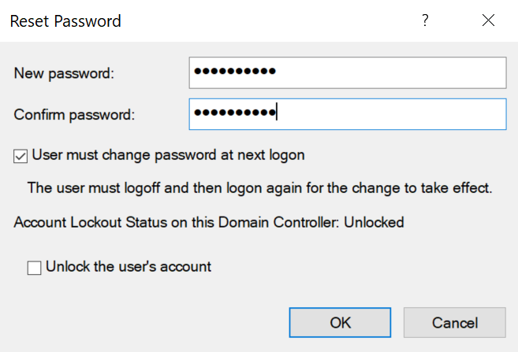
Nora må velge sitt eget passord ved neste pålogging.
Formidle det midlertidige passordet til Nora gjennom virksomhetens godkjente kanal. På klienten logger hun på med domenekontoen sin og det midlertidige passordet, og blir bedt om å velge et nytt.
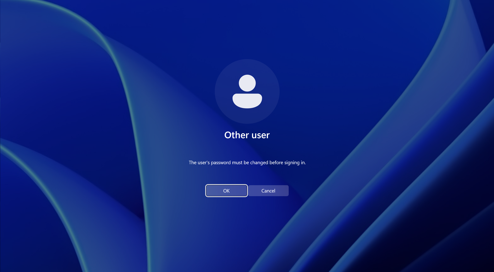
Klienten krever passordbytte før påloggingen fullføres.
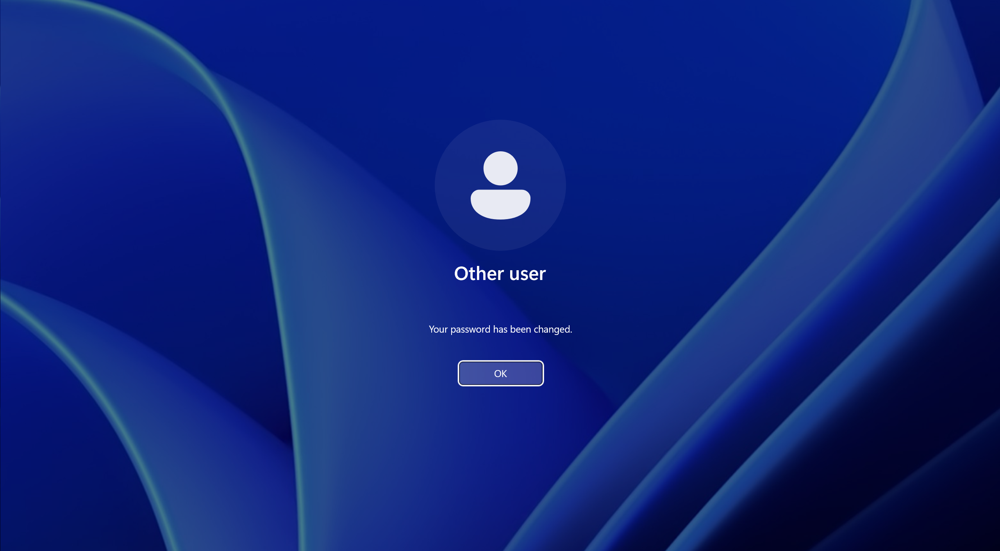
Passordet er endret. Kontroller at Nora får logget på før saken avsluttes.
Sak 2: Låst konto
Nora får ikke logget på etter flere forsøk med feil passord. Vi setter først opp kontolåsing, slik at vi kan gjenskape problemet i labben.
Klargjør kontolåsing
Gruppepolicy (Group Policy) brukes til å styre innstillinger sentralt i domenet. Her setter vi en grense på tre mislykkede påloggingsforsøk for å gjøre låsingen enkel å teste.
- Åpne Group Policy Management på DC01 ved å søke etter
gpmc.msc. - Utvid Forest: LAB.local → Domains → LAB.local. Høyreklikk Default Domain Policy og velg Edit.
- Gå til Computer Configuration → Policies → Windows Settings → Security Settings → Account Policies → Account Lockout Policy.
- Åpne Account lockout threshold, angi 3 invalid logon attempts, og velg Apply. Bekreft de foreslåtte følgeendringene med OK.
- Sett de øvrige verdiene som vist i tabellen, og lagre endringene.
| Innstilling | Verdi i labben | Betydning |
|---|---|---|
| Account lockout threshold | 3 forsøk | Antall feilforsøk før kontoen låses |
| Account lockout duration | 30 minutter | Hvor lenge kontoen forblir låst uten manuell opplåsing |
| Reset account lockout counter after | 30 minutter | Telleren nullstilles etter denne tiden uten nye feilforsøk |
| Allow Administrator account lockout | Disabled | Kontolåsing for den innebygde Administrator-kontoen er deaktivert i øvelsen |
Dette er labbens testinnstillinger; i et arbeidsmiljø følger vi virksomhetens sikkerhetsrutiner.
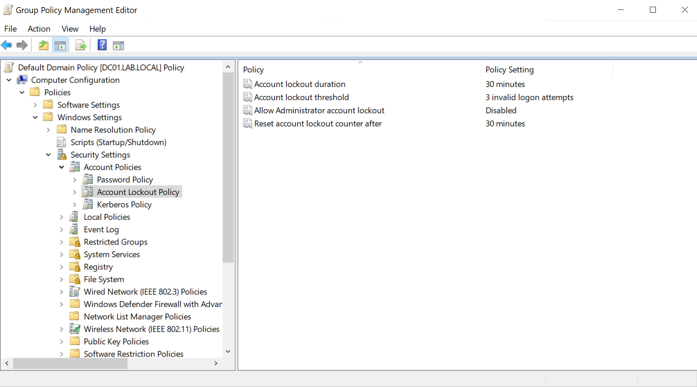
De ferdige innstillingene for kontolåsing i labben.
Gjenskap problemet og lås opp kontoen
Når policyen har trådt i kraft, prøver vi å logge på klienten med Noras konto og feil passord til meldingen om låst konto vises.
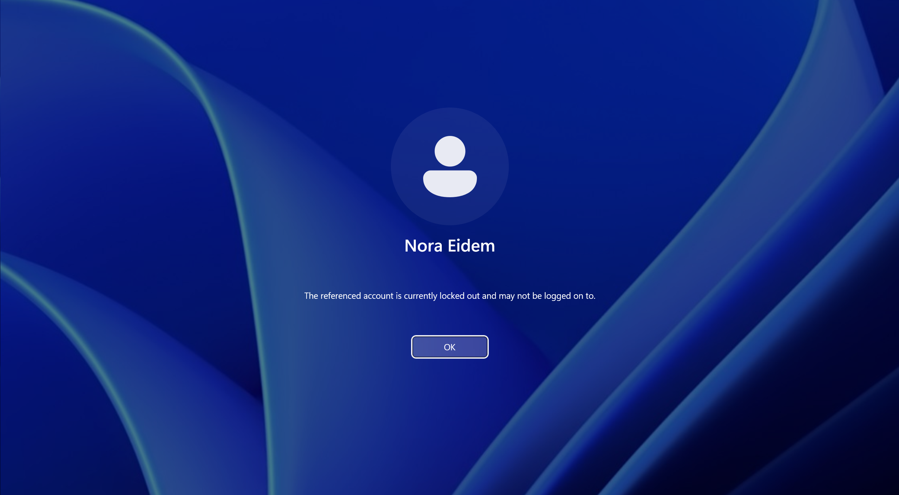
En låst konto må låses opp, eller vente til låsetiden utløper.
- Finn Nora i Active Directory Users and Computers på DC01.
- Dobbeltklikk på kontoen og åpne fanen Account.
- Merk Unlock account, og velg Apply → OK.
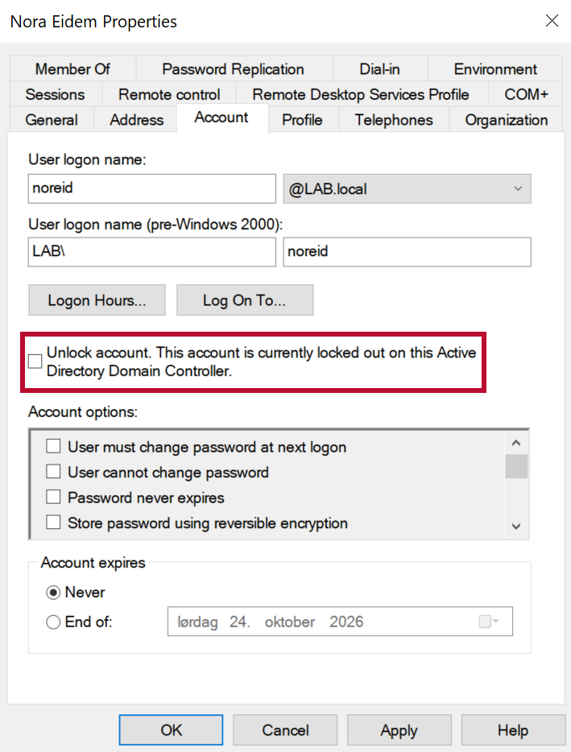
Unlock account låser opp kontoen uten å endre passordet.
Spør Nora om hun husker passordet. Hvis ikke, tilbakestiller vi det som i sak 1. Test deretter pålogging fra klienten. Med innstillingene våre oppheves låsingen også automatisk etter 30 minutter.
Sak 3: Deaktivert konto
I denne øvelsen er Noras konto deaktivert mens hun er borte. Når hun kommer tilbake fra ferie, ber hun om tilgang igjen. Vi avklarer med HR eller ansvarlig leder at kontoen skal aktiveres før vi gjør endringen.
En låst konto skyldes feilforsøk og kan låses opp. En deaktivert konto er slått av administrativt og må aktiveres igjen.
- For å gjenskape situasjonen finner vi Nora i Active Directory Users and Computers, høyreklikker på kontoen og velger Disable Account.
- Bekreft meldingen om at kontoen er deaktivert.
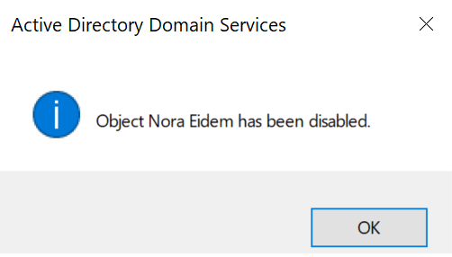
Vi deaktiverer kontoen uten å slette den, slik at den kan aktiveres igjen.
- Når aktivering er godkjent, høyreklikker vi på kontoen og velger Enable Account.
- Bekreft meldingen og be Nora prøve å logge på fra klienten.
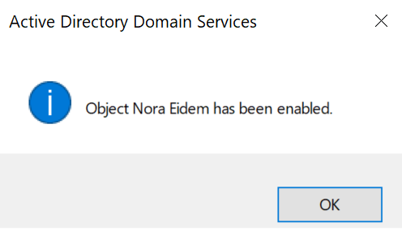
Kontoen er aktivert igjen. Kontroller påloggingen før saken avsluttes.
Alle stegene og skjermbildene finnes i bilderegisteret.
Bilderegister
Her finner du alle 166 skjermbilder fra labben, sortert etter kapitlene i guiden. Åpne steget du vil se nærmere på.
1. Labmiljø og nettverk
Installer VirtualBox og opprett serveren – vis figur 1–6
Figur 1

VirtualBox lastes ned fra den offisielle nettsiden.
Figur 2

VirtualBox Manager: opprett en ny virtuell maskin med New.
Figur 3

Den virtuelle serveren får navn og installasjonsmedium.
Figur 4

Serveren får 16 GB arbeidsminne og fire virtuelle prosessorer.
Figur 5

Serverens virtuelle disk settes til 50 GB.
Figur 6

DC01 er opprettet i VirtualBox og klar til å starte.
Installer Windows Server – vis figur 7–11
Figur 7
Windows Server 2022 Standard Evaluation med Desktop Experience velges.
Figur 8

Custom velges for en ny installasjon på den virtuelle disken.
Figur 9

Serverens tomme virtuelle disk velges som installasjonsmål.
Figur 10

Passordet til Administrator-kontoen opprettes.
Figur 11

Ctrl+Alt+Delete sendes til den virtuelle serveren fra VirtualBox-menyen.
Gi serveren navnet DC01 – vis figur 12–14
Figur 12

Server Manager viser datamaskinnavnet før navneendringen.
Figur 13

System Properties åpnes for å endre servernavnet.
Figur 14

Servernavnet endres til DC01.
Sett opp nettverkskortene – vis figur 15–19
Figur 15

Avslutningsmenyen åpnes i VirtualBox.
Figur 16

VirtualBox ber om bekreftelse før maskinen slås av med Power Off.
Figur 17

Innstillingene åpnes for den avslåtte serveren.
Figur 18
Adapter 1 på DC01 kobles til Host-only-nettverket.
Figur 19

Adapter 2 bruker NAT for utgående forbindelser fra DC01.
Finn DHCP-området i VirtualBox – vis figur 20–21
Figur 20

Nettverksinnstillingene i VirtualBox åpnes via File → Tools → Network.
Figur 21
DHCP-området kontrolleres før vi velger en fast IP-adresse til serveren.
Gi serveren en fast IP-adresse – vis figur 22–25
Figur 22

Nettverkstilkoblinger åpnes på serveren.
Figur 23

Egenskapene åpnes for serverens nettverkskort på labnettverket.
Figur 24

IPv4-innstillingene åpnes for nettverkskortet.
Figur 25
DC01 får IP-adressen 192.168.56.55, masken 255.255.255.0 og samme adresse som DNS-server.
Installer Guest Additions – vis figur 47–54
Figur 47

Guest Additions-CD-en monteres fra VirtualBox Devices-menyen.
Figur 48

Filutforskeren åpnes inne i den virtuelle maskinen.
Figur 49

Guest Additions-CD-stasjonen finnes under This PC.
Figur 50

Windows-installasjonsprogrammet for Guest Additions velges.
Figur 51

Guest Additions-installasjonen starter.
Figur 52

Installasjonsplassering for Guest Additions.
Figur 53

Komponentvalg for Guest Additions.
Figur 54

Den virtuelle maskinen startes på nytt etter installasjonen.
Juster skjerm og skalering – vis figur 55–58
Figur 55

VirtualBox viser skjerm- og skaleringsvalg etter installasjonen.
Figur 56

Den virtuelle maskinen vises med større skjermflate.
Figur 57

Display settings åpnes i Windows.
Figur 58

Skalering endres for å gjøre tekst og ikoner større.
2. Active Directory
Installer AD DS – vis figur 26–37
Figur 26

Server Manager åpnes for å installere AD DS-rollen.
Figur 27

Add roles and features starter rolleinstallasjonen.
Figur 28

Veiviseren viser hva som bør være klart før rolleinstallasjonen.
Figur 29

Role-based or feature-based installation velges.
Figur 30

DC01 velges som serveren rollen skal installeres på.
Figur 31

Active Directory Domain Services markeres i rollelisten.
Figur 32

Nødvendige administrasjonsverktøy legges til med Add Features.
Figur 33
AD DS er valgt i rollelisten.
Figur 34

Tilleggsfunksjoner vises før installasjonen fortsetter.
Figur 35

Informasjon om AD DS og behovet for DNS.
Figur 36

Rolleinstallasjonen bekreftes med Install.
Figur 37

AD DS er installert. Serveren skal nå settes opp som domenekontroller.
Opprett domenet og gjør DC01 til domenekontroller – vis figur 38–46
Figur 38

Varselikonet åpner neste steg i oppsettet av domenekontrolleren.
Figur 39

Promote this server to a domain controller velges.
Figur 40
En ny skog opprettes med domenenavnet LAB.local.
Figur 41

Innstillingene for domenekontrolleren velges, og passord for gjenoppretting angis.
Figur 42

Advarsel om manglende DNS-delegering i laboppsettet.
Figur 43

Plassering av AD-databasen, loggene og den delte systemmappen SYSVOL.
Figur 44

NetBIOS-navnet settes til LAB.
Figur 45

Innstillingene for domenekontrolleren oppsummeres før installasjon.
Figur 46

Veiviseren kontrollerer at serveren er klar for installasjon.
3. Windows-klienten
Opprett klienten i VirtualBox – vis figur 59–63
Figur 59

En ny virtuell maskin opprettes for Windows-klienten.
Figur 60

Windows 11 velges som installasjonsmedium.
Figur 61

Klienten får 8 GB arbeidsminne og tre virtuelle prosessorer.
Figur 62

Klientens virtuelle disk settes til 80 GB.
Figur 63

Den virtuelle klienten er klar til å starte.
Installer Windows 11 Pro – vis figur 64–74
Figur 64

En tast trykkes for å starte installasjonen fra ISO-en.
Figur 65

Språk og region velges i Windows 11-installasjonen.
Figur 66

Norsk tastaturoppsett velges.
Figur 67

Ren Windows-installasjon velges på den virtuelle maskinen.
Figur 68

Installasjonen fortsetter uten produktnøkkel.
Figur 69
Windows 11 Pro velges for domenetilknytning.
Figur 70

Lisensvilkårene vises før installasjonen.
Figur 71

Den tomme virtuelle disken på 80 GB velges.
Figur 72

Installasjonsvalgene oppsummeres før Windows installeres.
Figur 73

Windows 11 installeres.
Figur 74

Windows fortsetter installasjonen etter omstart.
Velg region, tastatur og maskinnavn – vis figur 75–78
Figur 75

Norge velges som region i førstegangsoppsettet.
Figur 76

Norsk tastatur velges i førstegangsoppsettet.
Figur 77

Et ekstra tastaturoppsett hoppes over.
Figur 78

Windows-maskinnavnet settes til CLT-001.
Opprett en lokal konto – vis figur 79–85
Figur 79

Sign-in options åpnes i jobb- eller skoleoppsettet.
Figur 80

Domain join instead velges for å opprette en lokal konto før klienten meldes inn i domenet.
Figur 81

Set up for work or school velges i førstegangsoppsettet.
Figur 82

Den lokale klientkontoen får navnet Ola Nordmann.
Figur 83

Passordet til den lokale kontoen opprettes.
Figur 84

Passordet til den lokale kontoen bekreftes.
Figur 85

Sikkerhetsspørsmål settes opp for den lokale kontoen.
Velg personverninnstillinger og fullfør oppsettet – vis figur 86–92
Figur 86

Posisjonstilgang avslås i personverninnstillingene.
Figur 87

Find my device avslås i personverninnstillingene.
Figur 88

Bare nødvendige diagnosedata velges.
Figur 89

Valgfri forbedring av håndskrift og inntasting avslås.
Figur 90

Personlige tilbud avslås.
Figur 91

Windows fullfører oppdateringer i førstegangsoppsettet.
Figur 92

Påloggingsskjerm for den lokale kontoen Ola Nordmann.
Koble klienten til labnettverket – vis figur 93
Figur 93

Klienten kobles til samme Host-only-nettverk som serveren.
Sett klientens DNS-server – vis figur 112–115
Figur 112

Nettverkstilkoblinger åpnes på klienten.
Figur 113

Klientens Ethernet-egenskaper åpnes.
Figur 114

Klientens IPv4-egenskaper velges.
Figur 115
Klienten får IP-adresse automatisk og bruker 192.168.56.55 som DNS-server.
Meld klienten inn i domenet – vis figur 116–122
Figur 116

Kommandolinjen åpnes fra Start-menyen.
Figur 117

sysdm.cpl åpner systemegenskapene på klienten.
Figur 118

Klientens System Properties viser CLT-001 i en arbeidsgruppe.
Figur 119

LAB.local angis som domene for CLT-001.
Figur 120

En konto med rettighet til å melde klienten inn i domenet oppgis.
Figur 121
Velkomstmeldingen bekrefter vellykket tilknytning til LAB.local.
Figur 122

Klienten må startes på nytt etter domenetilknytningen.
4. Brukere, grupper og OU-er
Opprett OU-ene Accounts og Groups – vis figur 94–97
Figur 94

Active Directory Users and Computers åpnes på DC01.
Figur 95

New Organizational Unit velges under LAB.local.
Figur 96

OU-en Accounts opprettes med beskyttelse mot utilsiktet sletting.
Figur 97

OU-en Groups opprettes med beskyttelse mot utilsiktet sletting.
Opprett brukerkontoene – vis figur 98–102
Figur 98

En ny bruker opprettes i Accounts.
Figur 99
Eirik Solbergs navn og påloggingsnavn eirsol fylles inn.
Figur 100

Brukeren får et midlertidig passord som må endres ved neste pålogging.
Figur 101

Oppsummering før Eiriks konto opprettes.
Figur 102

Alle ti labkontoene vises i Accounts.
Opprett avdelingsgruppene – vis figur 103–105
Figur 103

En ny gruppe opprettes i Groups.
Figur 104
HR opprettes som global sikkerhetsgruppe.
Figur 105

De fem avdelingsgruppene vises i katalogen.
Legg brukerne i riktig gruppe – vis figur 106–111
Figur 106

Eiriks brukeregenskaper åpnes for å endre medlemskap.
Figur 107

Egenskapene for Eiriks brukerkonto vises.
Figur 108

Member Of viser Domain Users før avdelingsgruppen legges til.
Figur 109

IT søkes opp som gruppenavn i LAB.local.
Figur 110

Check Names bekrefter at IT-gruppen finnes.
Figur 111
Eirik er nå medlem av IT og Domain Users.
5. Delte mapper og rettigheter
Opprett mappene – vis figur 123–128
Figur 123

File Explorer åpnes på serveren.
Figur 124

Serverens C-disk åpnes.
Figur 125

En ny mappe opprettes på serveren.
Figur 126

Hovedmappen C:\Shares er opprettet.
Figur 127
Avdelingsmappene Finance, HR, IT, Marketing og Sales er opprettet.
Figur 128

HR Forms og Resumes er opprettet under HR.
Del HR-mappen og sett delingsrettigheter – vis figur 129–133
Figur 129

HR-mappens egenskaper åpnes.
Figur 130

Sharing-fanen åpnes for å dele HR-mappen.
Figur 131

HR aktiveres som deling i Advanced Sharing.
Figur 132
Everyone får Full Control under delingsrettighetene.
Figur 133

Delingsinnstillingene bekreftes i Advanced Sharing.
Gi HR-gruppen Modify-tilgang med NTFS – vis figur 134–138
Figur 134

Security-fanen åpnes for å endre NTFS-rettighetene.
Figur 135

Edit åpner redigering av NTFS-rettighetene.
Figur 136

HR-gruppen søkes opp og bekreftes med Check Names.
Figur 137
HR-gruppen får Modify-tilgang til HR-mappen.
Figur 138

Security-fanen viser de valgte tillatelsene for HR.
6. Test av tilgang
Logg på med en domenekonto – vis figur 139
Figur 139

Maja logger på klienten med domenekontoen sin.
Koble til HR-mappen som nettverksstasjon – vis figur 140–142
Figur 140

Map network drive åpnes fra klientens File Explorer.
Figur 141
Nettverksstasjonen Z: kobles til \LAB.LOCAL\HR.
Figur 142

HR-delingen åpnes fra klienten og viser undermappene.
Test at brukeren kan opprette en mappe – vis figur 143
Figur 143
Maja oppretter en mappe i HR-delingen for å teste skrivetilgangen.
7. Vanlige supportsaker
Glemt passord – vis figur 144–151
Figur 144
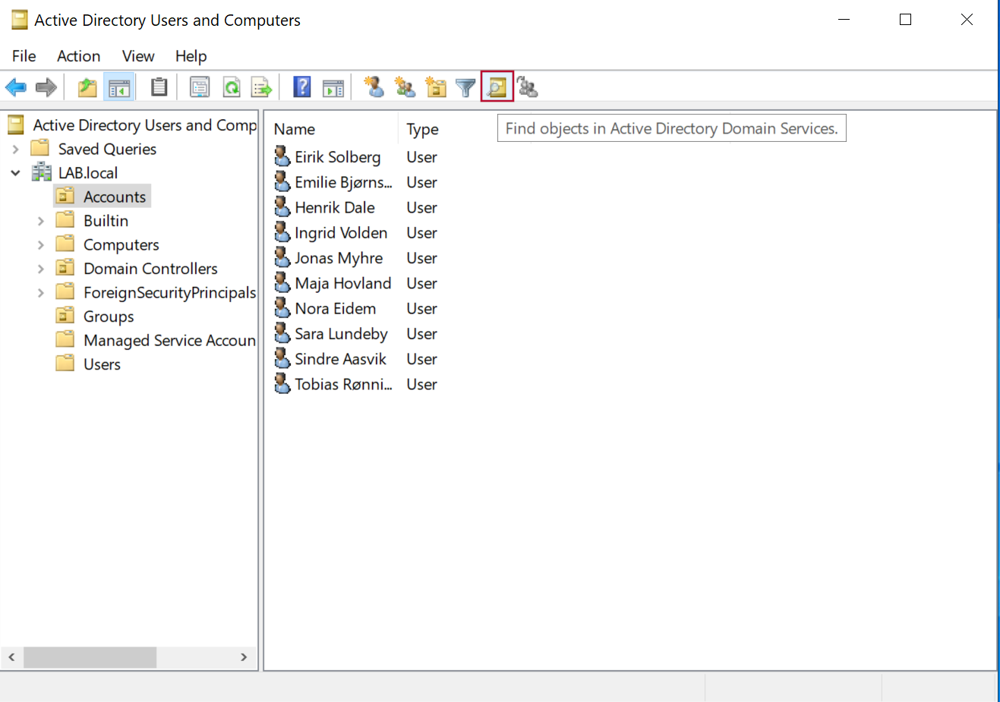
Søk etter brukere i Active Directory Users and Computers.
Figur 145
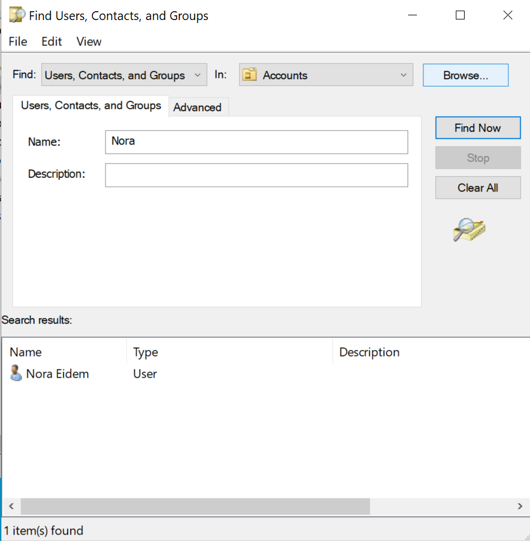
Nora Eidem finnes med Find Now.
Figur 146
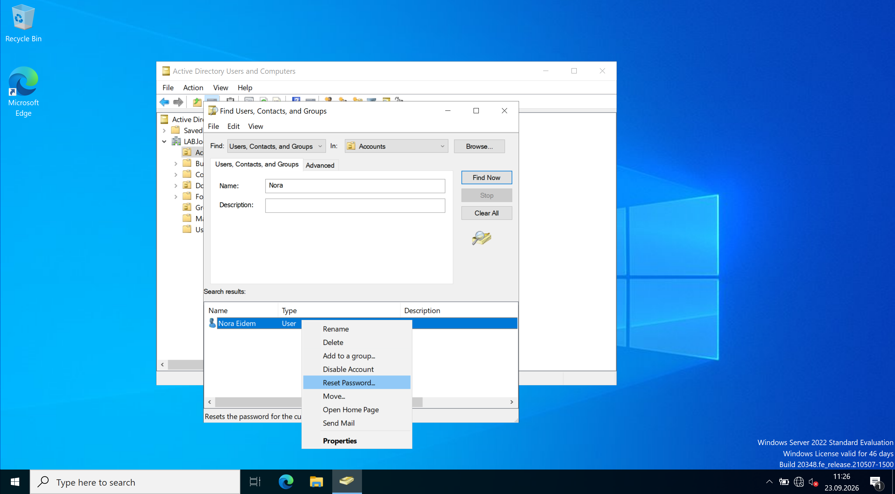
Reset Password velges for Noras konto.
Figur 147
Et midlertidig passord settes med krav om passordbytte ved neste pålogging.
Figur 148
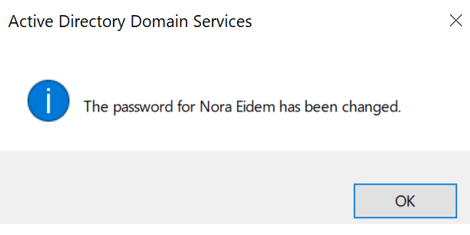
Active Directory bekrefter at passordet er tilbakestilt.
Figur 149
Klienten krever passordbytte før pålogging.
Figur 150
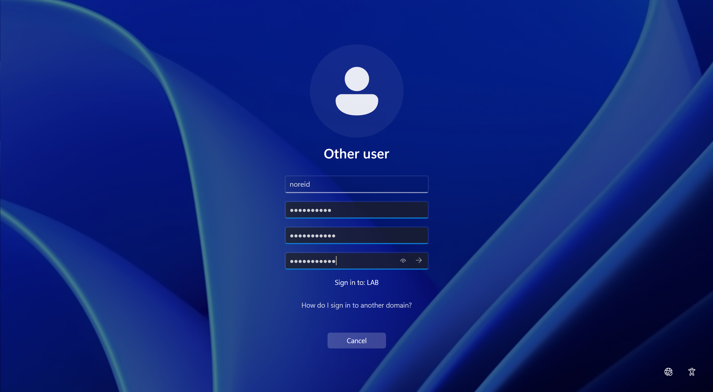
Nora fyller inn et nytt passord.
Figur 151
Windows bekrefter at passordet er endret.
Låst konto – vis figur 152–162
Figur 152
Group Policy Management åpnes med gpmc.msc.
Figur 153
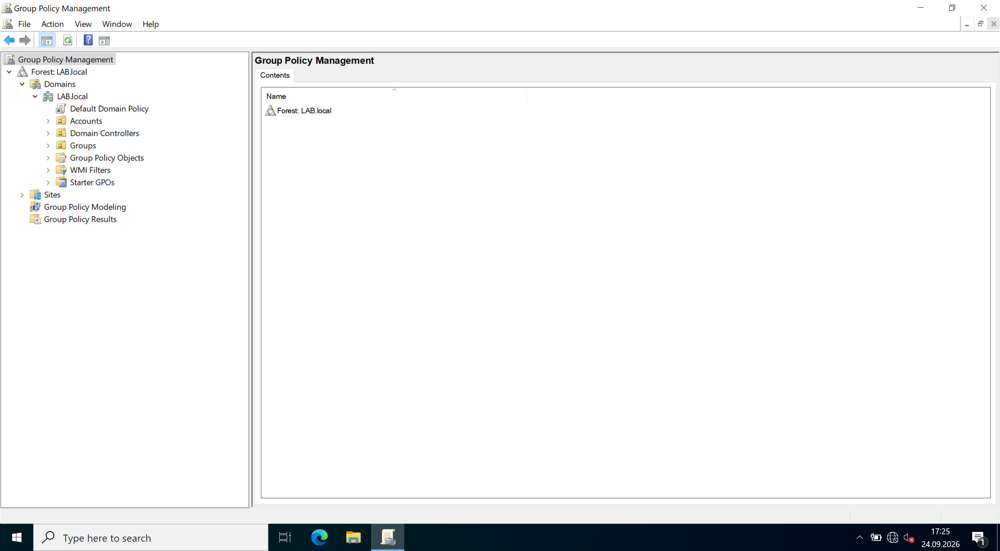
Domenet vises i Group Policy Management.
Figur 154
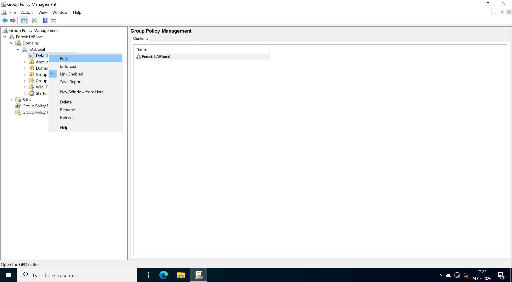
Default Domain Policy åpnes for redigering.
Figur 155
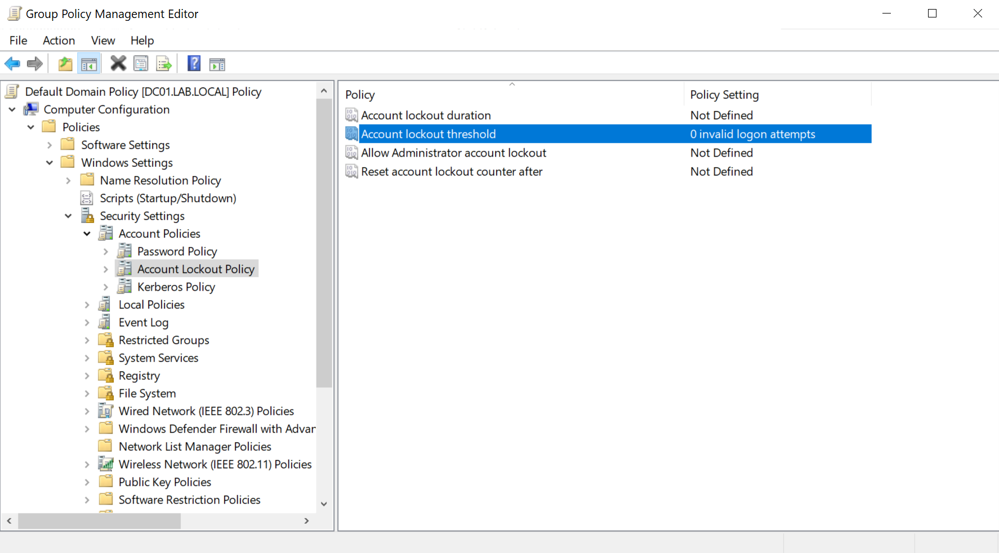
Account Lockout Policy viser innstillingene for kontolåsing.
Figur 156
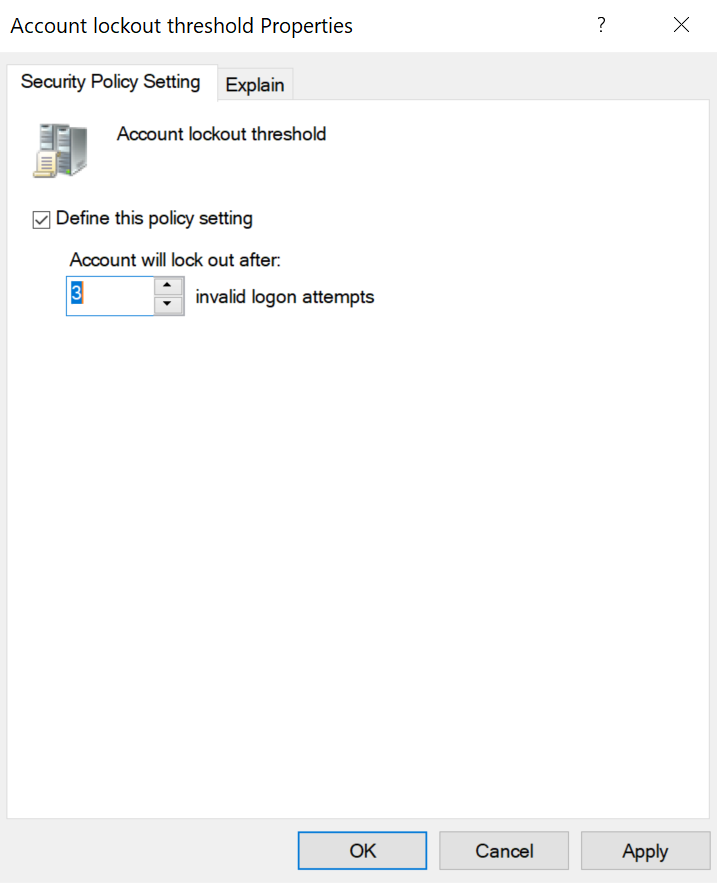
Account lockout threshold åpnes for endring.
Figur 157
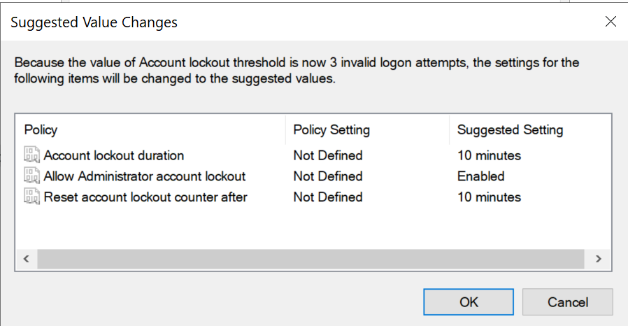
Windows foreslår følgeendringer til kontolåsingen.
Figur 158
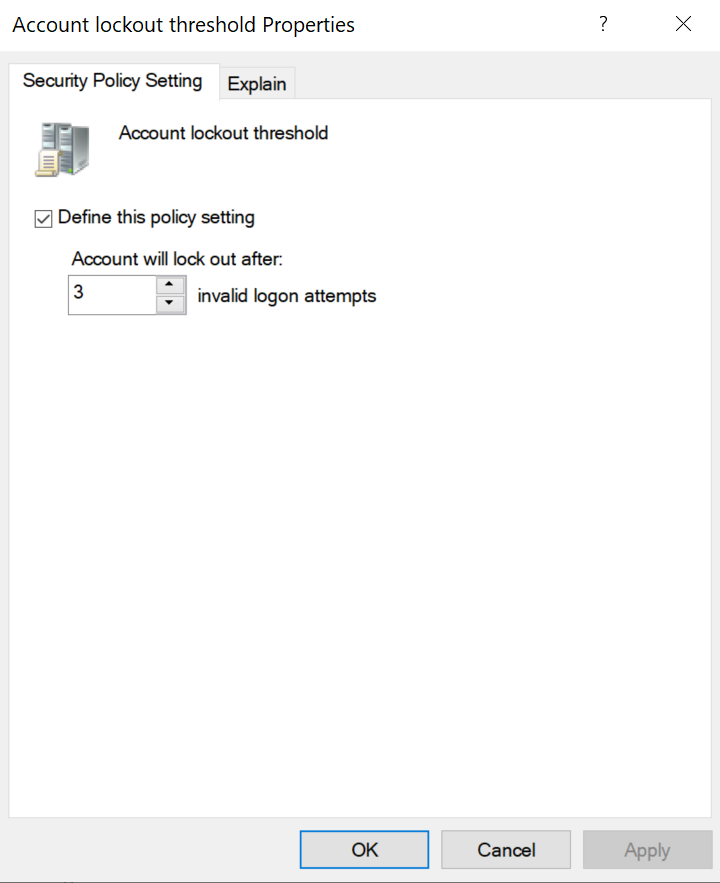
Terskelen settes til tre mislykkede påloggingsforsøk.
Figur 159
Kontoen låses i 30 minutter etter tre mislykkede påloggingsforsøk.
Figur 160
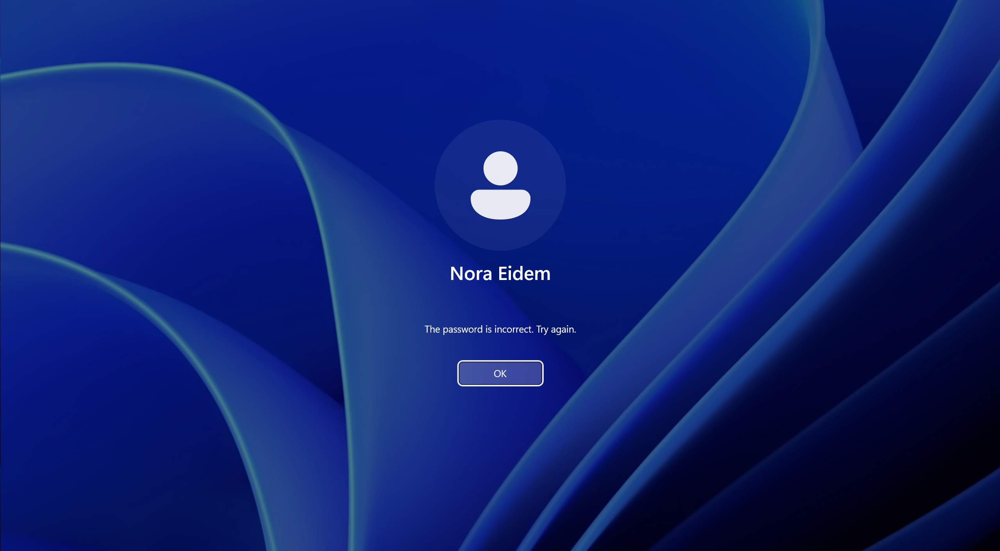
Klienten viser en feilmelding ved feil passord.
Figur 161
Klienten viser at kontoen er låst.
Figur 162
Unlock account låser opp Noras konto.
Deaktivere og aktivere konto – vis figur 163–166
Figur 163
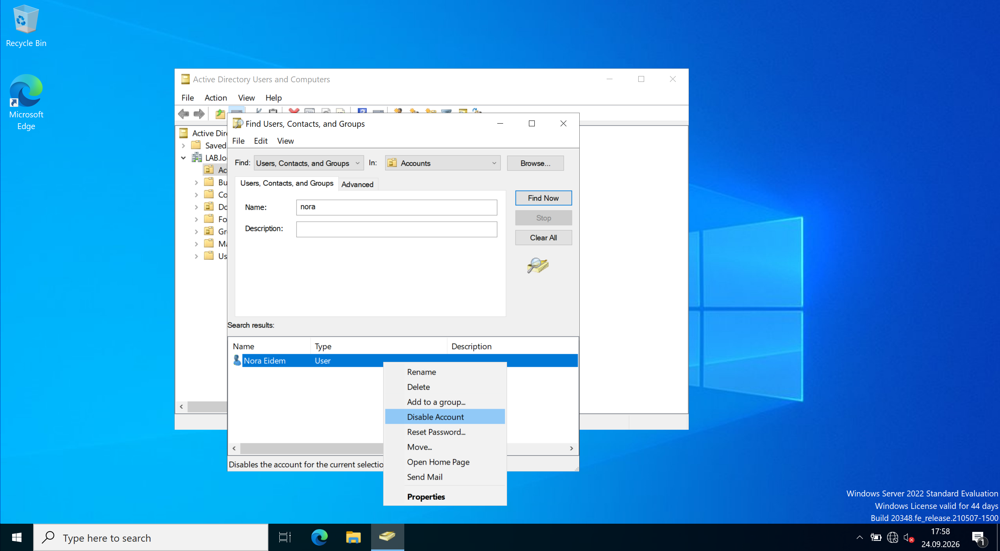
Disable Account velges for Nora.
Figur 164
Active Directory bekrefter at kontoen er deaktivert.
Figur 165
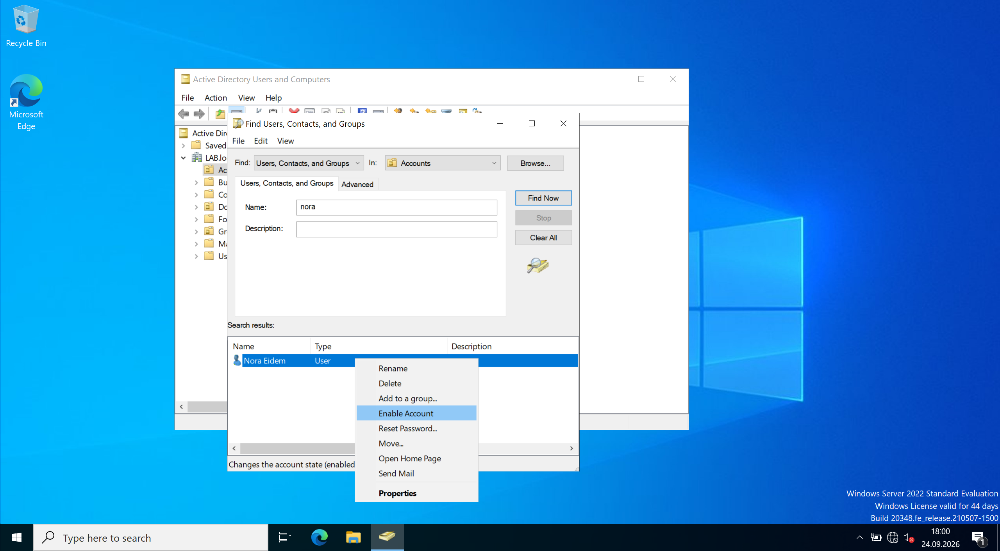
Enable Account velges for Nora.
Figur 166
Active Directory bekrefter at kontoen er aktivert.
Kilder
Disse kildene underbygger begrepsforklaringene i guiden: